Painéis flutuando sobre o seu papel de parede, uma ilha dinâmica no topo da tela, um lançador no Meta+V e ambientes que trocam o tema e o fundo de uma vez. Para KDE Plasma 6. Panels floating over your wallpaper, a dynamic island at the top of the screen, a launcher on Meta+V and environments that switch the theme and the wallpaper in one go. For KDE Plasma 6.
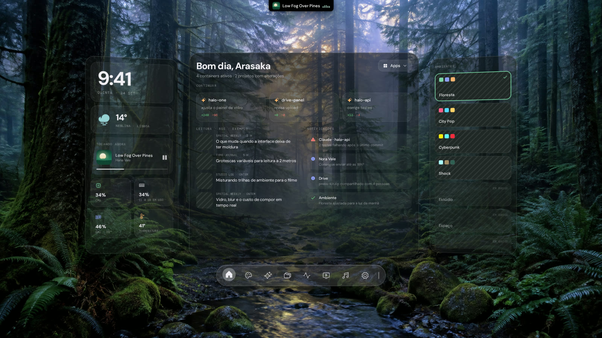
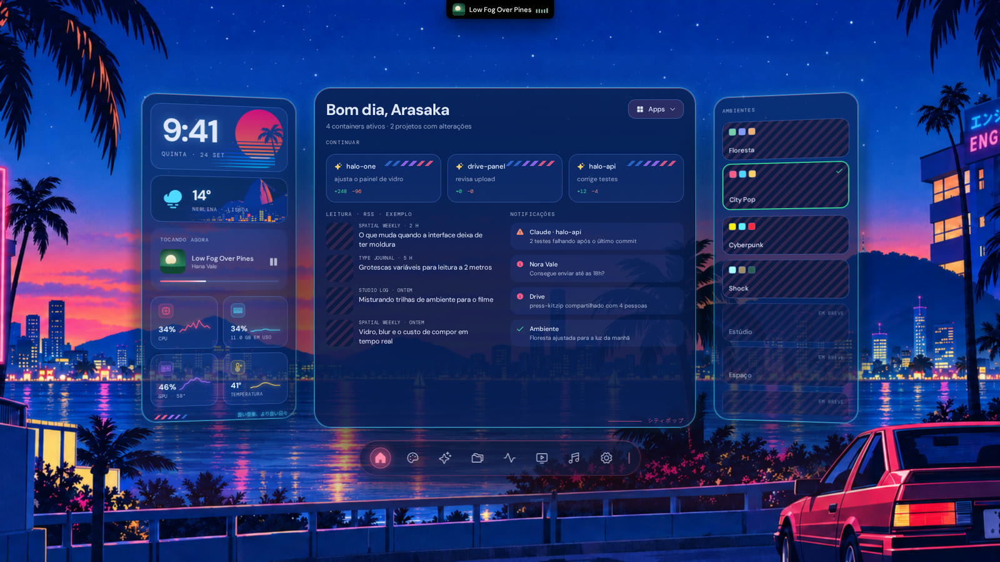
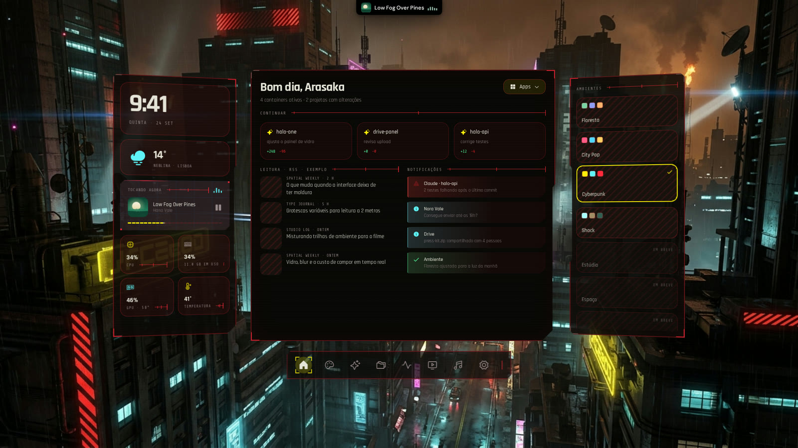
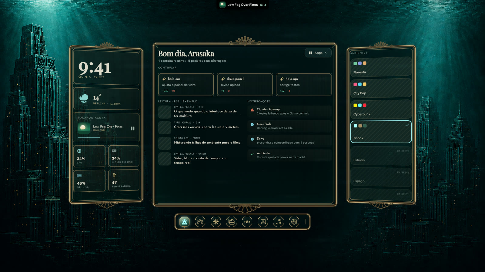
Clique num ambiente — no app, ele troca o tema e o papel de parede da sua sessão.Pick an environment — in the app, it switches the theme and your session wallpaper.
Uma pílula sobre o painel do Plasma que anuncia, mostra a música com o espectro de verdade e abre ao passar o mouse. Nasce ligada, e o Meta+Espaço recolhe o app inteiro para dentro dela. A pill on top of the Plasma panel that announces, shows the music with the real spectrum and opens on hover. It's on by default, and Meta+Space folds the whole app into it.
? e aprove na pílula.Ask with ? and approve in the pill.Apps, comandos, contas, conversões, emoji, busca na web e janelas — no Meta+V, vestido pelo ambiente, e no campo da ilha, que é o mesmo motor. Apps, commands, math, conversions, emoji, web search and windows — on Meta+V, dressed by the environment, and in the island's field, which is the same engine.
Um ambiente é o tema do app mais o papel de parede da sessão — imagem ou vídeo. Painéis, fontes, dock, lançador e balões mudam juntos, e o seu fundo original fica guardado.An environment is the app's theme plus your session wallpaper — image or video. Panels, fonts, dock, launcher and bubbles change together, and your original wallpaper is kept.
O Plasma continua servidor; o Halo vira vigia, esconde os balões dele e desenha os seus, com o vidro, as fontes e a entrada do ambiente. Clicar numa ação volta ao app que mandou, e fechar o Halo devolve os balões na hora. Ligue em Configurações → Notificações. Plasma stays the server; Halo becomes a watcher, hides its bubbles and draws its own, with the environment's glass, fonts and entrance. Clicking an action goes back to the app that sent it, and closing Halo gives the bubbles back at once. Turn it on in Settings → Notifications.
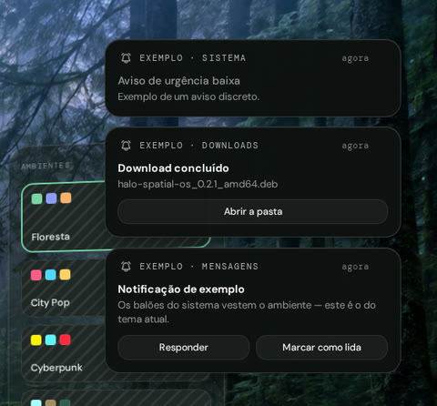
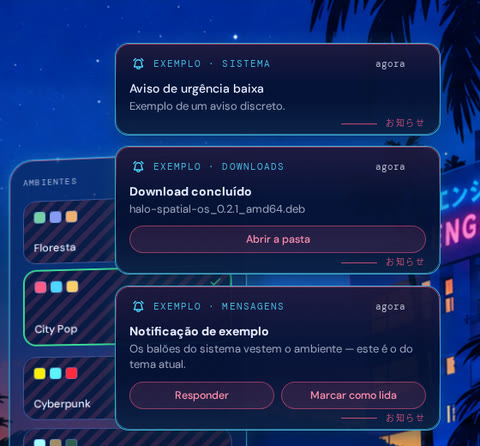
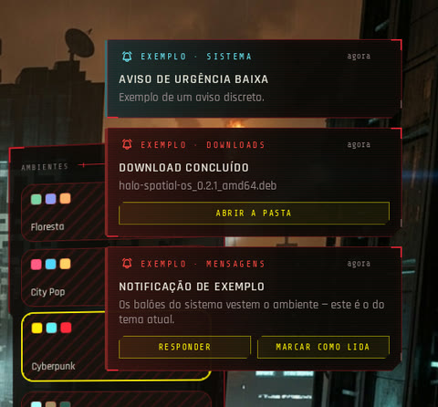
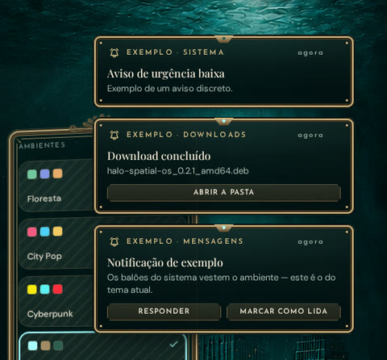
Cada uma entra com a animação dela. Clique numa imagem para ver de perto.Each one comes in with its own animation. Click an image to see it up close.
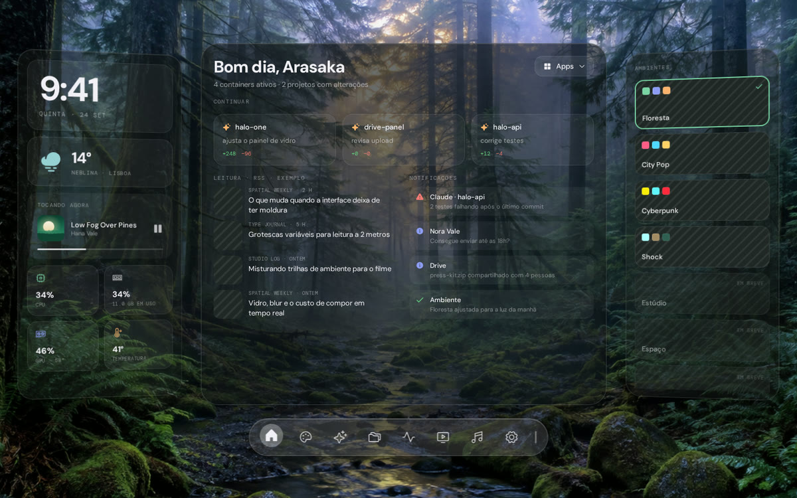
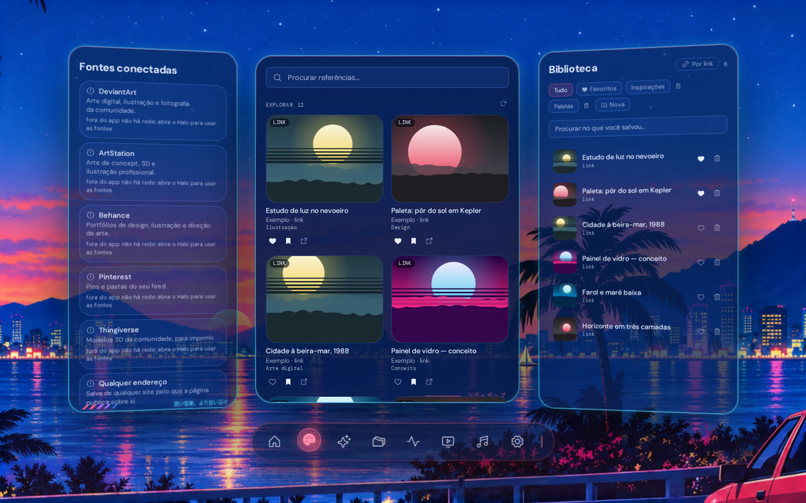
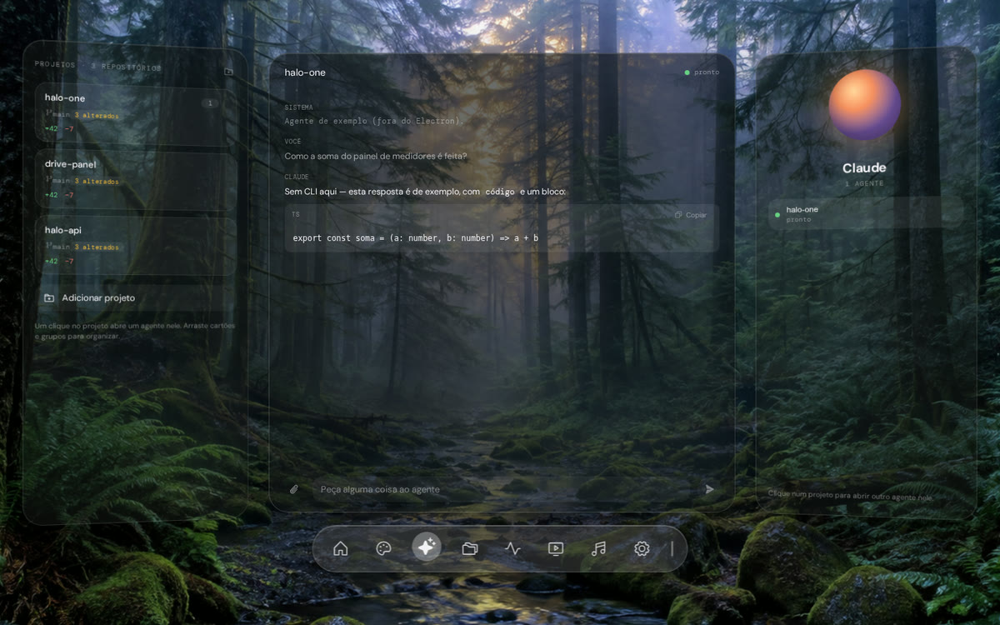
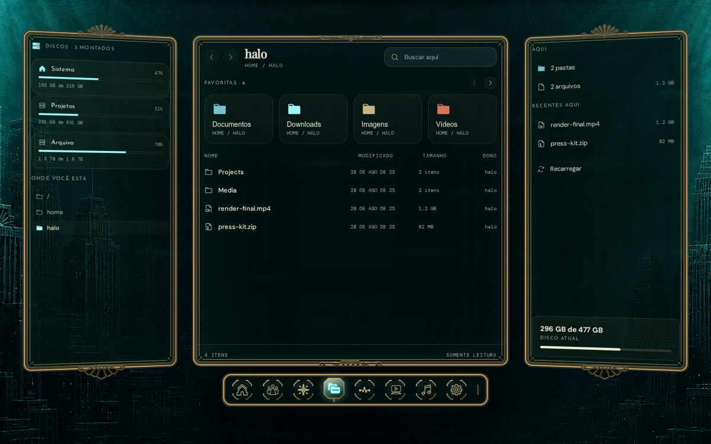
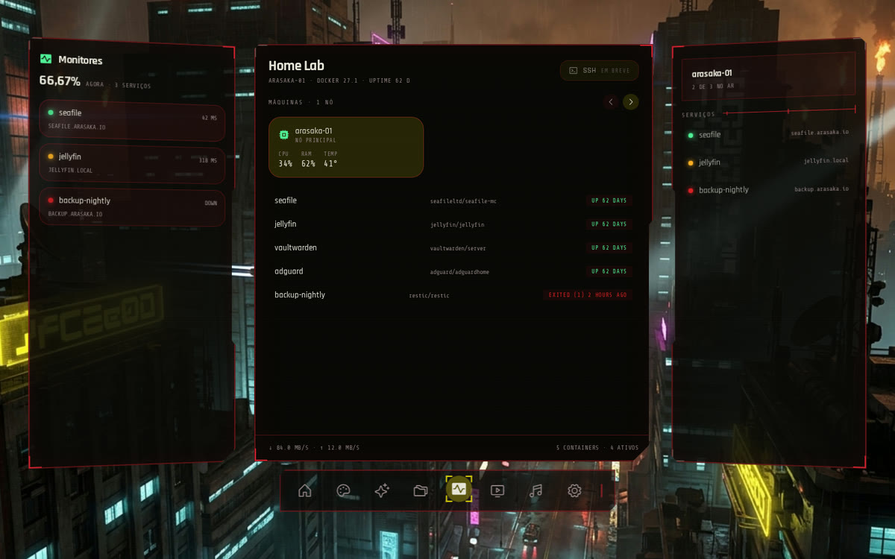
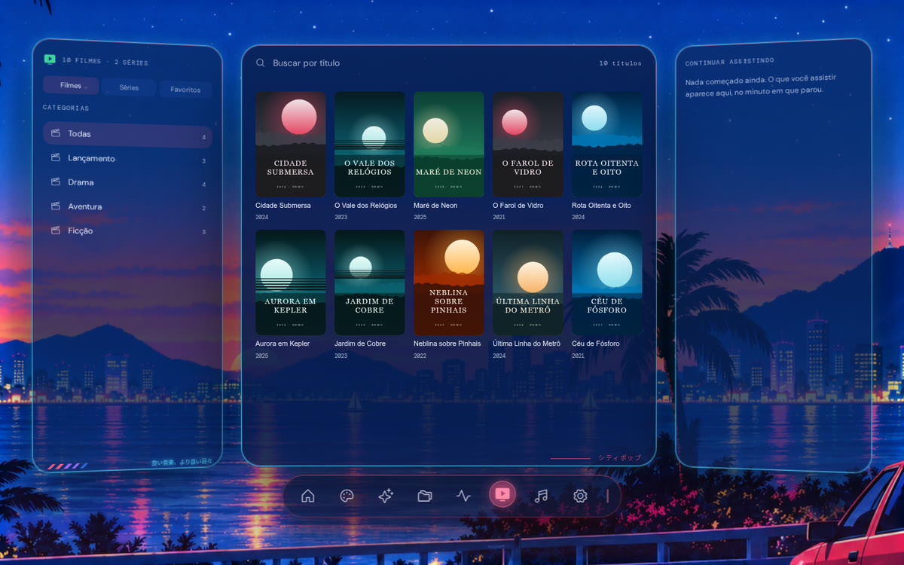
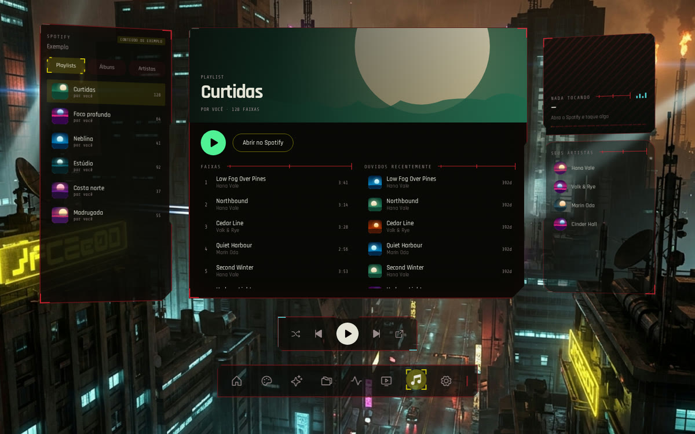
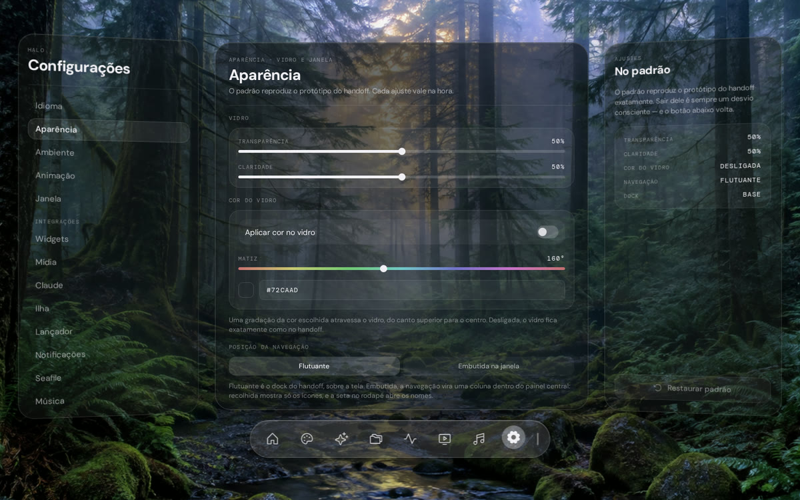
Os dados são os seus, lidos daqui mesmo: sem conta, sem servidor, sem nada inventado.The data is yours, read right here: no account, no server, nothing made up.
Mora na camada do papel de parede, fora da barra de tarefas. Nasce recolhida e volta pela ilha, pela bandeja ou por Meta+Espaço.Lives on the wallpaper layer, out of the taskbar. Starts collapsed and comes back from the island, the tray or Meta+Space.
Com o app do Spotify aberto, o "tocando agora" e os comandos já funcionam, pelo MPRIS. A API só entra para playlists e outros aparelhos.With the Spotify app open, now playing and the controls just work, over MPRIS. The API is only for playlists and other devices.
CPU, memória, GPU e temperatura, com histórico, lidos por um relógio só para não pesar.CPU, memory, GPU and temperature, with history, read by a single clock to stay light.
Um agente por projeto, com histórico e anexos. O CLI é instalado à parte — sem ele, a tela avisa e mostra onde configurar.One agent per project, with history and attachments. The CLI is installed separately — without it, the screen tells you where to set it up.
Genie, Merlin ou Clippit reagindo ao que os agentes fazem — personagens .acs do Microsoft Agent, que você traz.Genie, Merlin or Clippit reacting to what agents do — Microsoft Agent .acs characters you bring.
Sua lista M3U vira catálogo com favoritos e "continuar assistindo", e um player que fica por cima.Your M3U list becomes a catalog with favorites and "continue watching", and a player that stays on top.
Containers do Docker, serviços com latência medida e a saúde da máquina.Docker containers, services with measured latency and the machine's health.
Feeds RSS que você escolhe — nasce com Tecnoblog, CNN Brasil e BBC World.RSS feeds of your choice — starts with Tecnoblog, CNN Brasil and BBC World.
Os ambientes, a ilha e as abas, o lançador, os balões em cada tema e cada tela entrando com a animação dela.The environments, the island and its tabs, the launcher, the bubbles in each theme and every screen coming in with its animation.
Feito para Ubuntu com KDE Plasma 6. Não tenta ser compatível com tudo — e diz o que precisa.Made for Ubuntu with KDE Plasma 6. It doesn't try to run everywhere — and it tells you what it needs.
A versão mais recente está emThe latest version is in Releases.
Ele puxa o que é essencial e o perfil do AppArmor de que o Electron precisa.It pulls in the essentials and the AppArmor profile Electron needs.
sudo apt install ./halo-spatial-os_0.2.1_amd64.debAbra o Halo pelo menu — a ilha aparece no topo da tela. Em Configurações → Sistema ele lista cada programa que falta, o que se perde sem ele e o comando para instalar.Open Halo from the menu — the island shows up at the top of the screen. Settings → System lists every missing program, what you lose without it and the command to install it.
| Testado emTested on | Precisa deRequires | |
|---|---|---|
| DistribuiçãoDistribution | Ubuntu 26.04.1 LTS | Ubuntu (ou derivado Debian) recentea recent Ubuntu (or Debian derivative) |
| Área de trabalhoDesktop | KDE Plasma 6.6.6 · KWin 6.6.6 | KDE Plasma 6 |
| SessãoSession | Wayland, com o app em X11 pelo XwaylandWayland, with the app on X11 through Xwayland | X11, ou Wayland com XwaylandX11, or Wayland with Xwayland |
| VídeoGraphics | NVIDIA, driver proprietárioNVIDIA, proprietary driver | qualquer placa (o medidor de GPU lê NVIDIA)any GPU (the GPU meter reads NVIDIA) |
| MonitoresMonitors | mais de ummore than one | um ou mais — abaixo de 1440 px a janela fica centralizadaone or more — below 1440 px the window is centered |
Sem conta, sem servidor. O Halo lê a máquina localmente e não manda nada sobre ela.No account, no server. Halo reads the machine locally and sends nothing about it.
Clima, os feeds que você mantiver, letras (LRCLIB), Social Arte, TMDB e Spotify quando configurados.Weather, the feeds you keep, lyrics (LRCLIB), Social Arte, TMDB and Spotify when set up.
Em ~/.config/halo-spatial-os. Token não viaja em linha de comando e a interface nunca o vê.In ~/.config/halo-spatial-os. Tokens never travel on the command line and the interface never sees them.
Não existe operação de escrever, apagar, renomear ou executar — nem no serviço, nem no IPC.There is no write, delete, rename or execute operation — not in the service, not in IPC.
Sim, e o código é aberto, sob GPL-3.0. Não há conta, assinatura nem versão paga.Yes, and open source under GPL-3.0. No account, subscription or paid version.
Não. O Halo conversa com o KWin, o Klipper, a bandeja e o painel do Plasma — é feito para KDE Plasma 6. Fora dele o app abre, mas a ilha, o lançador, a bandeja, os balões e a troca de papel de parede não funcionam.No. Halo talks to KWin, Klipper, the tray and the Plasma panel — it's made for KDE Plasma 6. Elsewhere the app opens, but the island, launcher, tray, bubbles and wallpaper switch don't work.
É de propósito: da segunda abertura em diante o Halo nasce recolhido. Passe o mouse na ilha, aperte Meta+Espaço ou clique no ícone da bandeja. Para abrir sempre visível, desligue em Configurações → Janela.That's on purpose: from the second launch on, Halo starts collapsed. Hover the island, press Meta+Space or click the tray icon. To always open visible, turn it off in Settings → Window.
Quatro coisas, cada uma com interruptor: o papel de parede ao trocar de ambiente (o seu é guardado antes, e um botão o devolve); o efeito da gaveta do KWin e os atalhos, que vêm com a ilha (ligada por padrão); e o Meta+V, só com o lançador ligado. Desligar desfaz.Four things, each with a switch: the wallpaper when you switch environments (yours is saved first, and a button restores it); the KWin drawer effect and the shortcuts, which come with the island (on by default); and Meta+V, only with the launcher on. Turning them off undoes it.
Não. Cada integração é opcional: sem ela, a tela diz o que falta e onde configurar, e o resto do app funciona igual. O Claude Code CLI é instalado à parte; o Spotify funciona só com o app aberto.No. Every integration is optional: without it, the screen says what's missing and where to set it up, and the rest works the same. The Claude Code CLI is installed separately; Spotify works with just the app open.
Antes, desligue a ilha e o lançador em Configurações (isso apaga os atalhos e o efeito e devolve o Meta+V). Depois, sudo apt remove halo-spatial-os. Suas configurações ficam em ~/.config/halo-spatial-os, se quiser apagar também.First turn off the island and the launcher in Settings (that deletes the shortcuts and the effect and gives Meta+V back). Then sudo apt remove halo-spatial-os. Your settings stay in ~/.config/halo-spatial-os if you want to delete them too.
Grátis, aberto, e feito para o Plasma.Free, open, and made for Plasma.